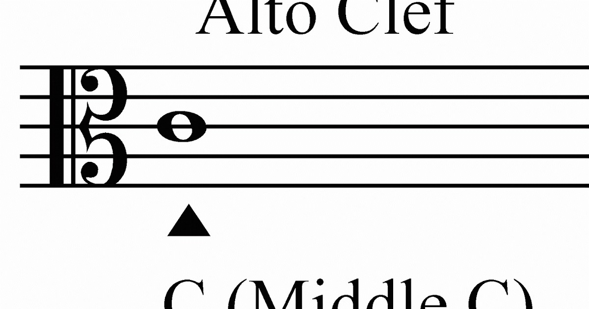

This website will introduce the instrument I play for 10 years.
First let talk about the musical clef I read.
The muscial clef i read is alto clef, just like violin read clef and cello read bass clef.
We also have the unique clef we read
The picture below is the alto clef also a piccture of viola
| Click Me to second | Click Me to second |
|---|